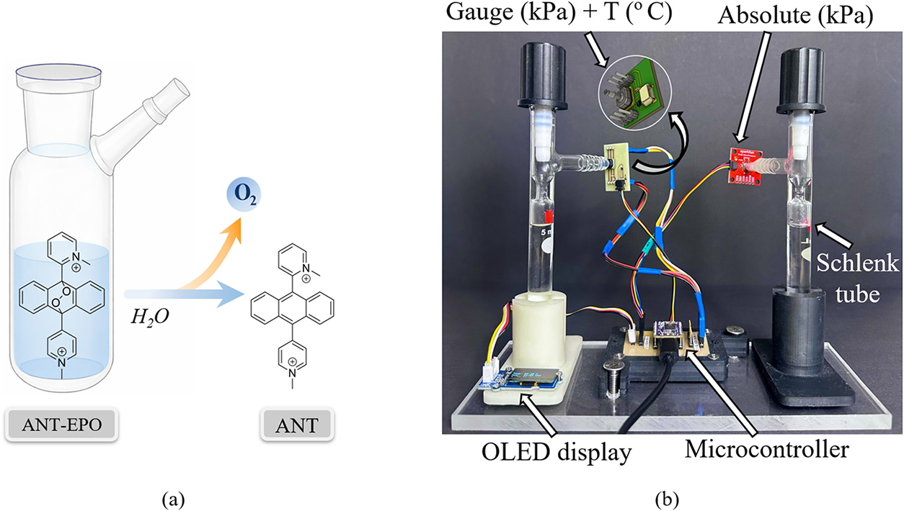

01 / Embedded sensing & measurement
Making slow physical
processes measurable.
From optical and pressure sensors to recorded signals, interpretable models, and explicit measurement limits.
- Context
- Doctoral research · University of Freiburg
- My contribution
- Instrumentation, acquisition, signal processing, and model-based analysis
- Platforms
- ESP32-S2 · Optical sensing · Python
- Evidence
- Three first-author journal articles
The problem
A sensor reading needs a measurement model.
Slow gas release creates a demanding instrumentation problem. The signal evolves over hours or days, and temperature changes, baseline drift, sensor referencing, and the chamber itself all affect the observed response.
My doctoral work addressed this through complementary optical and pressure-based platforms. The application was oxygen release from anthracene endoperoxides (ANT-EPO) in confined systems. The engineering task was to make that process observable, record it continuously, and establish what the measurements could support.
System architecture
Connected hardware and analysis.
The pressure platform combines a sensitive gauge channel with an absolute-pressure channel and local temperature measurement. An ESP32-based controller supports continuous acquisition and display; host-side software records and analyses the resulting time series.
- Gauge pressure
- ABP2 / SPI
- Absolute pressure
- MPR / I²C
- Temperature
- SHT45 / I²C
Simplified architecture of the ESP32-S2 pressure-acquisition platform.

| Gauge pressure | Honeywell ABP2, 0–16 kPa range, SPI interface. |
|---|---|
| Absolute pressure | Honeywell MPR family, I²C interface. |
| Environment | Sensirion SHT45 temperature and humidity sensing, I²C. |
| Acquisition | Adafruit QT Py ESP32 platform, local OLED display, continuous host logging. |
| Interpretation | Time-series processing, baseline assessment, parameter estimation, and pressure-to-gas modelling. |
A complementary optical platform
Two optical paths at 265 nm and 400 nm use reference and sample photodetectors, amplification, and a custom housing. Calibration and comparison with benchtop UV–vis measurements connect detector voltages to absorbance and molecular conversion.
Engineering decisions
Design around the uncertainty.
Use complementary pressure references
Gauge and absolute sensors provide different reference points. Parallel measurements of identically prepared samples help assess consistency and environmental effects. The channels measure separate sample tubes, so agreement is interpreted within the experimental configuration.
Account for temperature and geometry
Converting pressure into gas amount requires a defined headspace and a temperature model. Gas–liquid partitioning and retention further shape the accessible pressure response. These assumptions belong in the analysis and its stated limits.
Separate acquisition from interpretation
Recording the pressure and environmental channels supports later inspection of baseline behaviour, transient events, and processing choices. Filtered traces and fitted parameters remain linked to the measurement conditions that produced them.
Measured evidence
Long-duration data, documented conditions.
The published pressure-quantification study reports continuous acquisition at 1 Hz, with individual measurements extending beyond 70 hours at 37 °C and over 200 hours at room temperature. The tested geometry used 6 mL of solution and 4 mL of headspace in 10 mL tubes.
These results establish long-duration observability within the tested setup. The reported durations describe host-logged experiments; battery autonomy and industrial qualification were outside that evaluation.
On the optical side, the measurement platform was compared with a reference UV–vis instrument and an absorbance model. The published optical study documents the calibration and validation conditions.
Current technical direction
Bring signal-quality assessment onto the device.
A related embedded-processing project explores a two-stage ESP32 pipeline: adaptive Savitzky–Golay filtering for pressure and Isolation Forest inference on temperature-derived features for environmental disturbance flagging.
The processing retains the raw signal and exposes the selected filter state. The engineering trade-off is the improvement in interpretability against latency, memory, and energy overhead under matched acquisition conditions.
This collaborative work builds on Ahmet Yasar Ayfer's student project. It is a separate development and evaluation effort from the journal results above; the temperature flag indicates departure from the training conditions and requires interpretation in the measurement context.
Supporting work
Read the published methods.
Pressure-derived gas accumulation and kinetic quantification ↗Sharma et al. · ACS Omega · 2026 · DOI: 10.1021/acsomega.6c06043Optical absorbance sensing and experimental validation ↗Sharma et al. · Sensors and Actuators B: Chemical · 2026 · DOI: 10.1016/j.snb.2025.138667Pressure sensing and kinetic modelling ↗Sharma et al. · ACS Omega · 2025 · DOI: 10.1021/acsomega.5c07255Next case study